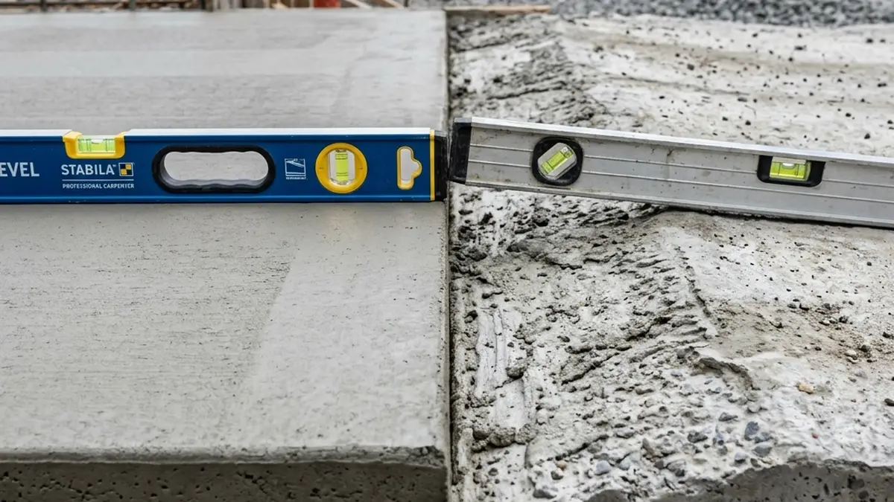
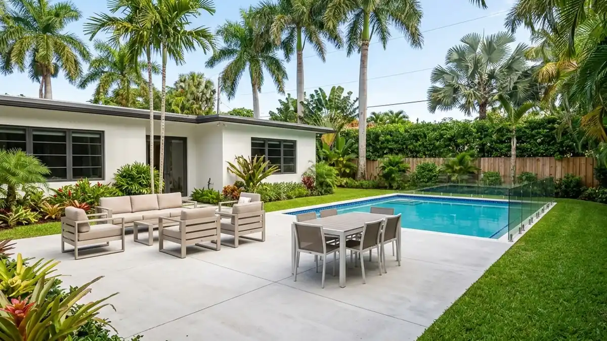

If you live in South Florida, you know that our sandy soil and heavy rains can cause driveways, patios, and sidewalks to sink or settle unevenly over time. When confronted with a sunken slab, most homeowners immediately assume they need to completely tear it out and start over. But before you pay thousands for a total replacement, searching for "concrete leveling near me" could save you time, money, and hassle.
What is Concrete Leveling?
Concrete leveling—often referred to as slab jacking, mudjacking, or polyurethane foam injection—is the process of lifting and stabilizing sunken concrete. By drilling small, strategically placed holes in the sunken slab, contractors pump a specialized material underneath. As the material expands, it safely and accurately raises the concrete back to its original position.

The Hidden Costs of Total Replacement
Tearing out a sinking driveway or patio isn't just expensive; it's disruptive. Heavy machinery will tear up your landscaping, and you'll have to deal with the noise and mess of demolition. Additionally, newly poured concrete takes days to cure before you can walk or drive on it.
In contrast, concrete leveling usually takes only a few hours. The materials used, particularly high-density polyurethane foam, cure in as little as 15 minutes. This means you can park on your leveled driveway the very same day.
Polyurethane Foam vs. Mudjacking
If you're looking for concrete leveling near me, it's crucial to know what material the contractor uses. Traditional mudjacking uses a slurry of sand, cement, and soil. While effective, it's very heavy and can wash out over time if the underlying soil erosion isn't fixed.
Modern polyurethane injection is the gold standard in Davie and surrounding areas. It is lightweight, waterproof, and environmentally safe. Because it doesn't add massive weight to already weak soil, it provides a much more permanent fix for your sinking concrete.

How to Choose the Right Contractor
Not all contractors who show up when you search "concrete leveling near me" use the same techniques. When requesting a quote, ask them:
- Do you use traditional mudjacking or polyurethane foam?
- Do you offer a warranty on the leveling?
- Are you licensed and insured in Davie, FL?
At Davie Concrete, we specialize in high-quality structural repairs and leveling. We understand South Florida's unique soil challenges and utilize the highest-grade materials to ensure your concrete work stands the test of time against our harsh climate.
Don't let a sinking slab ruin your home's curb appeal or become a tripping hazard. Contact us today to see if concrete leveling is the right solution for your property!